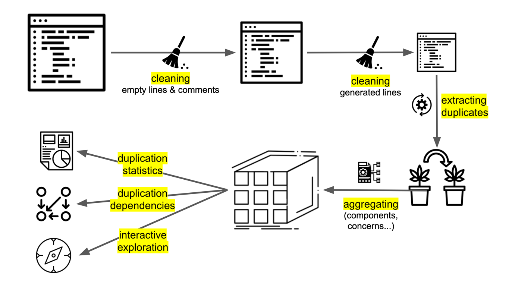

Duplication Analysis
For duplication, Sokrates look at places in code where there are six or more lines of code that are exactly the same. I reuse the threshold of size lines as it is used in tools that measure duplication (e.g. see Simian).

Figure 1: An overview of Sokrates’ duplication processing. To simplify processing, Sokrates first cleans the code. Then Sokrates extracts duplicates. Sokrates further aggregates the duplicates, and presents the data in reports or in Sokrates Explorer.
At the end of the process, a Sokrates duplication report presents the duplicates in your code, answering the following questions:
- How much duplication is there overall?
- How is duplication distributed per file type?
- How is duplication distributed per logical decomposition (i.e., per component)?
- How much of duplication is there between the components?
- What are the biggest duplicates?
- What are the most frequently duplicated pieces of code?
You can find an example of a duplication report here.
Duplication as Coupling
Socrates also uses duplicates to show similarities among components as dependencies. Here, I borrow the idea from Marting Folwer’s article Reducing Coupling, MartinFlower.com (IEEE Software article):
- “There are several ways to describe coupling, but it boils down to this: If changing one module in a program requires changing another module, then coupling exists. … Duplication always implies coupling, because changing one piece of duplicate code implies changing the other.”
Sokrates, draws a dependency diagram with each dependency defined as a number of lines duplicated between the components. Here is an example from Sokrates analysis:
 Figure 2: A fragment of a Sokrates duplication report visualizing duplicates between components as dependencies. The number on the links represents the number of duplicated lines.
Figure 2: A fragment of a Sokrates duplication report visualizing duplicates between components as dependencies. The number on the links represents the number of duplicated lines.
To Probe Further
- Avoid Repetition, MartinFlower.com (IEEE Software article)
- “Avoiding repetition is a simple principle that leads to good design.”
- “I have an increasing sense that a pig-headed determination to remove all repetition can lead you a long way toward a good design and can help you apply and understand the patterns that are common in good designs.”
- Refactoring duplicated code, sourcemaking.com
- “Merging duplicate code simplifies the structure of your code and makes it shorter.”
- “Simplification + shortness = code that is easier to simplify and cheaper to support.”
- Beck Design Rules, MartinFowler.com
- “[No duplication] is a notion expressed elsewhere as DRY [Don’t Repeat Yourself] or SPOT [Single Point Of Truth], Kent expressed it as saying everything should be said “Once and only Once.” Many programmers have observed that the exercise of eliminating duplication is a powerful way to drive out good designs.”
- Code Smells / Duplicated Code, Jeff Atwood, codinghorror.com:
- “Duplicated code is the bane of software development. Stamp out duplication whenever possible. You should always be on the lookout for more subtle cases of near-duplication, too. Don’t Repeat Yourself!”
- Code Duplication, Donald Raab
- “So, duplication sucks. The more rabidly a person hates duplication, the more I trust their opinions on managing information. A programmer, upon noticing some redundancy, should be thrown into a panic, begin hyperventilating, and stammer something about “¡El diablo! !El diablo está en mi software!. — Ryan King”
- The Cut-and-Paste Programming Software Development Anti-Pattern, sourcemaking.com
- “Cut-and-Paste Programming is a very common, but degenerate form of software reuse which creates maintenance nightmares.”